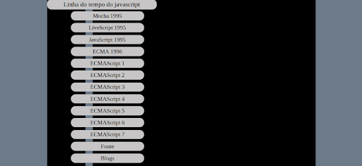

Introdução

Javascript é uma linguagem de programação leve que os desenvolvedores usam para criar interações mais dinâmicas ao desenvolver páginas da Web, aplicativos, servidores, jogos, etc. Ele cria elementos para melhorar a interação dos visitantes do site com as páginas da web, como menus suspensos, gráficos animados e cores de fundo dinâmicas. Geralmente o Javascript é usado como complemento às linguagens com HTML, CSS e PHP, mas a linguagem funciona bem também com CSS na formatação de elementos HTML. No entanto, ainda mantém a interação do usuário, algo que o CSS não pode fazer sozinho.
Surgimento
Javascript surgiu em 1995 e foi criada por Brendan Eich, a pedido da empresa Netscape (um dos primeiros navegadores) com o objetivo de validar formulários HTML. Como os browsers ainda eram estéticos, essa linguagem foi revolucionária para a época. Em 1996, a Microsoft criou uma linguagem idêntica para ser usada no Internet Explorer. A Netscape então regularizou a linguagem através da organização internacional ECMA, companhia especializada em padrões e regras. Com o tempo, a linguagem foi sendo modificada e hoje em dia é “Client-side”, ou seja o que ocorre no dispositivo do usuário final, o cliente. Isso inclui o que o usuário vê, como texto, imagens e o restante da interface, além de todas as ações que um aplicativo executa no navegador do usuário.
Onde é utilizado
O Javascript é a linguagem mais utilizada para programação de aplicações Web e é suportada pela maioria dos navegadores (Firefox, Chrome, Edge e Safari) sem que o usuário precise instalar um plug-in. Hoje em dia pode ser utilizada no desenvolvimento do Back-End junto com o Node.JS, um software de código aberto e multiplataforma e o framework Express, ampliando o campo de atuação de um desenvolvedor para Full-Stack. Também é utilizado para aplicações em mobiles com uma infinidade de frameworks e no desenvolvimento de jogos!
principais vantagens
- Simplicidade ‒ tem uma estrutura simples que o torna fácil de aprender e implementar, além de rodar mais rápido do que algumas outras linguagens. Os erros também são fáceis de detectar e corrigir.
- Velocidade ‒ executa scripts diretamente no navegador da web sem se conectar a um servidor primeiro ou precisar de um compilador. Além disso, a maioria dos principais navegadores permite que o JavaScript compile códigos durante a execução do programa.
- Versatilidade – é compatível com outras linguagens como PHP, Perl e Java.
- Popularidade ‒ muitos recursos e fóruns estão disponíveis para ajudar iniciantes com habilidades técnicas limitadas.
- Carga do servidor ‒ reduz as solicitações enviadas ao servidor. A validação de dados pode ser feita através do navegador da web e as atualizações se aplicam apenas a determinadas seções da página da web.
Linha do tempo do java script
- A evolução do JavaScript é impulsionada por fatores como avanços na especificação da linguagem e o surgimento de novas bibliotecas e frameworks, além da demanda crescente por aplicações web dinâmicas e interativas. A mudança mais significativa foi a introdução do ECMAScript, um padrão que define a sintaxe e o comportamento da linguagem de programação, especificando detalhes como tipos de dados, operadores, estruturas de controle, funções, objetos e métodos.
- Lançado em 1997, o ES1 foi a primeira versão padronizada do JavaScript pela Ecma International. Ela estabeleceu os fundamentos da linguagem, incluindo a sintaxe básica, tipos de dados, operadores e estruturas de controle
- O ES2, surgido em 1998, trouxe algumas melhorias à linguagem, como tratamento de exceções, definição de tipos de dados e outras alterações de menor importância.
- O ES3 introduziu muitos recursos importantes em 1999, como suporte para expressões regulares, novos métodos de Array e objetos nativos (como JSON). O padrão definiu a base para o JavaScript moderno e foi suportado pelos navegadores por vários anos.
- Embora tenha sido proposto, o ES4 nunca foi oficialmente lançado devido a divergências na comunidade de desenvolvimento.
- Lançado em 2009, o ES5 trouxe novos recursos, incluindo métodos de array adicionais (como map, filter e reduce), getters e setters, além de métodos para manipulação de objetos (como Object.keys e Object.create). Essa versão também marca a padronização do conceito de sandboxing, que executa o código JavaScript em um ambiente restrito. O ES5 ainda introduziu especificações relacionadas à segurança, como a definição de propriedades não configuráveis, não enumeráveis e não graváveis, que contribuíram para a integridade do ambiente de execução do JS nos navegadores.
- O ECMAScript 6, lançado em 2015, é um marco da linguagem, pois introduziu recursos poderosos, como classes, arrow functions, e o let e const para declaração de variáveis, que simplificaram e melhoraram significativamente a maneira como o código JavaScript é escrito e organizado. O ES6 também foi marcante por abordar questões de segurança relacionadas à comunicação entre origens diferentes (cross-origin) em aplicações web, permitindo que os servidores indiquem quais origens têm permissão para acessar seus recursos. O CORS (Cross-Origin Resource Sharing) foi uma adição crucial para permitir comunicação segura entre origens distintas e facilitar o desenvolvimento de aplicações web modernas que dependem de recursos de várias fontes.
- Desde o ES6 até 2021, a Ecma International lançou novas versões do ECMAScript anualmente, cada uma trazendo novos recursos e melhorias à linguagem, desde o ES7 (2016) até o ES12 (2021). Entre os recursos mais notáveis adicionados nas últimas versões, estão os métodos Object.values() e Object.entries(), introduzidos no ES8, que facilitam a manipulação segura de dados e evitando exposições acidentais de informações sensíveis. No ES9, a Async Iteration permitiu lidar com operações assíncronas de forma mais segura e eficiente, reduzindo a necessidade de callbacks aninhados e melhorando a legibilidade e manutenção do código. Os métodos Array.prototype.flat() e Array.prototype.flatMap(), adicionados no ES10, são úteis para manipular e validar arrays para reduzir o risco de manipulação de dados inesperada e evitar vulnerabilidades relacionadas a arrays. Já o BigInt, introduzido no ES11, permite lidar com números inteiros arbitrariamente grandes de forma mais precisa, o que pode ser útil em aplicações que lidam com operações numéricas sensíveis.